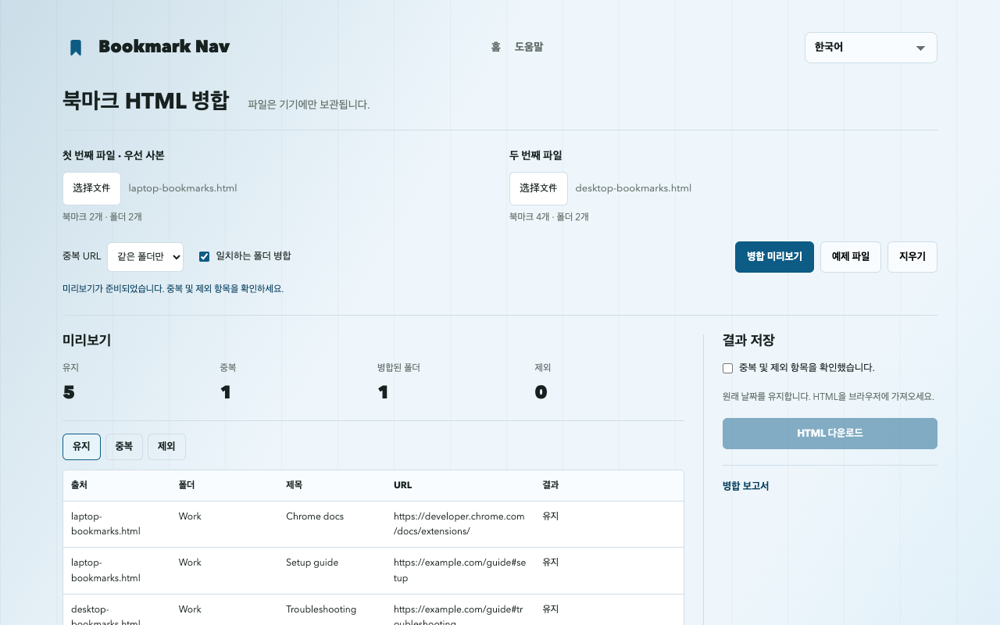

Chrome 북마크 HTML 파일을 병합하는 방법
두 Chrome 북마크 HTML을 선택하고 중복을 미리 본 뒤 병합 파일을 다운로드해 Chrome에 가져오세요. 내보낸 파일을 병합하며 계정이나 브라우저 동기화를 통합하는 기능은 아닙니다.
북마크 파일 병합내보내기, 병합 및 가져오기
- chrome://bookmarks를 열고 북마크 관리자 메뉴에서 내보내기를 선택하세요. 원본 HTML을 백업으로 보관하고 두 번째 북마크 라이브러리도 내보내세요.
- 웹 도구에서 두 파일을 선택하세요. 중복 제거 시 첫 번째 파일이 우선합니다.
- 먼저 같은 폴더만 중복 제거하고 유지, 중복 및 제외 항목을 확인한 후 규칙을 조정하세요.
- 미리보기를 확인하고 HTML을 다운로드하세요. 웹사이트는 브라우저 북마크를 직접 변경하지 않습니다.
- Chrome 북마크 관리자 메뉴에서 HTML을 가져오세요. 먼저 빈 테스트 프로필에서 확인하면 기본 라이브러리에 중복 사본이 추가되는 것을 피할 수 있습니다.
재현 가능한 링크 6개 예제
예제 파일은 링크 총 6개입니다. 기본 미리보기는 5개를 유지하고 같은 폴더 중복 1개를 제거합니다. Learning과 Work의 동일 URL은 모두 남으며 #setup과 #troubleshooting은 별개 링크입니다.

유지 및 제외 규칙
중복 제거 시 첫 번째 파일을 우선합니다. URL은 정확히 비교하며 매개변수, #조각, 프로토콜 및 www 차이는 유지합니다. 기본적으로 다른 폴더의 동일 URL은 유지합니다.
이름과 상위 경로가 같은 폴더만 병합합니다. 병합을 끄면 파일별로 별도 폴더를 만들고 같은 수준의 중복 이름에 번호를 붙이며 북마크바 표시를 제거합니다.
다운로드에는 전체 구조, 지원 URL, 제목 및 사용 가능한 ADD_DATE / LAST_MODIFIED 값이 포함됩니다. 아이콘, 설명, 태그 및 동기화 정보는 제외합니다. 없거나 지원하지 않는 URL(javascript: 및 data: 포함)은 제외 항목으로 표시합니다. 링크 유효성은 검사하지 않습니다.
백업과 브라우저 가져오기 제한
두 원본 내보내기 파일을 보관하고 대상 브라우저도 백업하세요. 가져오기는 추가이므로 반복하면 사본이 늘어날 수 있습니다. HTML은 기존 라이브러리를 자동으로 교체하지 않습니다.
UTF-8 Netscape 북마크 HTML. 파일당 최대 10 MiB, 북마크와 폴더 25,000개, 폴더 64단계이며 바깥 목록은 제외합니다. JSON 및 plist는 지원하지 않습니다.
병합 결과가 입력 제한을 초과하면 이 도구로 다시 읽지 못할 수 있습니다. 파일별 폴더는 한 단계를 추가합니다. 원본 내보내기를 보관하세요.
Chrome은 빈 폴더를 제외하고 폴더 날짜를 재설정합니다. 북마크 제목, URL 및 추가 날짜는 유지됩니다. 북마크바 표시는 브라우저 북마크바에 대응할 수 있습니다.
웹 도구와 확장 프로그램의 차이
웹 도구는 확장 프로그램 없이 HTML을 다운로드합니다. 직접 추가, 백업 및 변경 확인 후 실행 취소는 확장 프로그램 1.3.1에 준비되어 있지만 현재 공개 버전에 있다고 가정하지 마세요. 설치 버전과 가져오기·병합 메뉴를 확인하세요. 직접 추가는 별도 폴더를 만들고 원래 HTML 날짜 대신 현재 날짜를 사용합니다.
Bookmark Nav 받기자주 묻는 질문
북마크 파일이 업로드되나요?
파일은 현재 탭 메모리에서 처리하며 업로드하거나 분석에 사용하지 않습니다. 새로고침하거나 페이지를 떠나면 지워집니다. 다운로드는 기기에 저장됩니다.
Chrome 계정이나 동기화 라이브러리를 통합하나요?
아니요. 두 HTML 파일을 기기에서 병합합니다. Chrome 동기화는 브라우저 설정에 따릅니다.
날짜와 빈 폴더는 유지되나요?
원래 날짜를 유지합니다. HTML을 브라우저에 가져오세요.
Chrome은 빈 폴더를 제외하고 폴더 날짜를 재설정합니다. 북마크 제목, URL 및 추가 날짜는 유지됩니다. 북마크바 표시는 브라우저 북마크바에 대응할 수 있습니다.